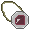

In December 2015, a group of high school students in Los Angeles started working on a video game. Inspired by Jason Rohrer’s The Castle Doctrine and Edmund McMillen’s The Binding of Isaac, the game was a puzzle roguelike in which players interact with electricity-based environments using tools. Those high school students had a lot of obstacles in their way: the difficulty of finding time to work on a project while attending school full-time, the challenge of publishing their first game, and the complex team dynamics that come up in a project of this kind.
Almost five years later, those students have published the game they started in December 2015. It’s called Herman Electro, and it’s available for download starting today.

Looking good, Herman!
As one of the developers of Herman Electro, I’m not here to tell you how great our game is, or how our the complex and engaging puzzle mechanics and the diverse tool and character strategies in the game provide dozens of hours of fun, or how you should support indie developers by playing innovative titles such as ours. Those are decisions you can make on your own (and I hope you make the correct ones, or the entire development team of Herman Electro will be personally insulted).
Instead, I’m going to outline in this blog post what I learned during those four and a half years of development.
_________________________
Assembling the Team
Herman Electro began as a project for our high school computer science club. As a result, we had little organizational structure, no clear way of assigning tasks to different members of the team, and no real incentive to work on the game besides our own excitement for the project.
We kept working on Herman Electro not to earn a salary or to fulfill a course requirement, but only because we were passionate about the project. The origins of the game as a club project came with some setbacks, such as a general lack of organization. But we also benefited from the nature of the project. We were driven by excitement and enthusiasm for new features and improvements to the game, and that excitement shows in the game’s design and the creativity and passion we’ve applied to it.

Flame is one of our oldest supertools, from the prototype we made in high school.
We could have easily stopped at the end of the 2015-2016 school year and called the game a success, as our prototype was working successfully. Instead, we kept working on it for years to come, finding time throughout college to develop the game from a fun prototype to an innovative, content-packed puzzle roguelike.
_________________________
Making Time for Game Development
As development on Herman Electro accelerated, we tried a few different strategies for finding time to work on the game, including weekly meetings and online task lists. Ultimately, none of these strategies were really successful.
There’s not really one regular time at which Herman Electro has been developed. We don’t meet somewhere once a week to crank out new puzzles or code new features. We meet frequently but irregularly.

If only we could freeze time, like this challenge character....
The vast majority of Herman Electro’s development has taken place little by little, with a small addition every day. Usually, I work on the game every morning when I wake up, before I get to other work. Sometimes, I have ideas for new characters that keep me up late into the night. Most of the time, I just add new art for a tile that’s been bothering me, or I tune a minor feature.
Over time, those small features add up. Five years of development is a long time for a video game, but we wanted to make sure the game felt complete by release. Over 1500 days since we started development, we’re ready to share it with you. We’re not done yet though; we plan to update the game every week with new content.
_________________________
Our Top Takeaways
1. It’s easier to make time for game development when you’re having fun with it.
One of the biggest obstacles for any game developer who doesn’t make games full-time is finding time to work. But finding that time has been a lot easier when I’ve been excited about the project. Even if I’m working on a less exciting part of the game, I can always motivate myself by thinking about interesting design elements. Meetings with the rest of the team also help keep us motivated.
2. No element of a game is too good to be improved -- but imperfections are okay.
The core idea of Herman Electro -- an electricity-based puzzle roguelike -- has held steady since the first day of development, but the game has evolved enormously since then. Character and item ideas have undergone numerous iterations, and the art style has changed time and time again. No element of the game is ever truly perfect -- and that’s okay, as long as we’re doing our best to make the game as good as it can be.
We’ll also be releasing weekly updates to improve upon the game post-release, and we intend to take player feedback into account heavily. Speaking of player feedback….
3. Get eyes on your game as soon as possible.
Player feedback is the easiest way to see a game from a fresh perspective and determine what needs to be changed. Not all feedback is useful -- playtester suggestions are often ridiculous and nonsensical. But from a high-level perspective, feedback from playtesters can be incredibly useful, and it has helped shape the evolution of Herman Electro immensely.

4. Make your game better every day.
Game development is hard, and life often gets in the way. I try to make Herman Electro a little better every single day, even if I only fix a few stray pixels in a sprite or edit the description text of an item. Herman Electro, and games in general, are enormous projects combining a variety of media, but they are also the combination of a lot of tiny elements that add up over time.
_________________________
Conclusion
I hope this post has helped elucidate the unlikely story of how Herman Electro was developed, and that you are now energized and ready to buy the game. The ball’s in your court.
If you have any questions or comments, feel free to email us at hermanelectrogame@gmail.com. You can follow our progress and see more posts and gifs on our Twitter account, @HermanElectro.